Navigation tools
Besides standard link functionality, WYSIWYG Web Builder has many other navigation tools. This article gives a brief overview of the available navigation objects and extensions.
For an introduction to standard links please visit this tutorial:
Linking your pages together (Creating Hyperlinks)
Besides standard link functionality, WYSIWYG Web Builder has many other navigation tools. This article gives a brief overview of the available navigation objects and extensions.
For an introduction to standard links please visit this tutorial:
Linking your pages together (Creating Hyperlinks)
Breadcrumb
Breadcrumbs are used to enhance the accessibility of a website by indicating the location using a navigational hierarchy. You can either manually configure all links for the menu or automatically synchronize with Site manager. Also supports FontAwesome icons.
Breadcrumbs are used to enhance the accessibility of a website by indicating the location using a navigational hierarchy. You can either manually configure all links for the menu or automatically synchronize with Site manager. Also supports FontAwesome icons.
CSS Menu
This menu is very similar to the Navigation bar with the main difference that this menu does not use images or JavaScript, it's a pure CSS based menu with support for multi-level navigation. Although the CSS menu does not use images, it still allows you to create fancy looking menus (glossy, glass, gradients etc) using CSS3 gradients and shadows.
This menu is very similar to the Navigation bar with the main difference that this menu does not use images or JavaScript, it's a pure CSS based menu with support for multi-level navigation. Although the CSS menu does not use images, it still allows you to create fancy looking menus (glossy, glass, gradients etc) using CSS3 gradients and shadows.
Navigation Bar
The navigation bar was one of the first menus added to the software. It's a basic menu based on button images. It supports many different styles and animations. More details can be found in this related tutorial: Adding a Navigation Bar to your web site
The navigation bar was one of the first menus added to the software. It's a basic menu based on button images. It supports many different styles and animations. More details can be found in this related tutorial: Adding a Navigation Bar to your web site
Menubar
The Menubar is a very powerful JavaScript-based menu script that can mimic complex menus found in popular GUI applications.
WYSIWYG Web Builder provides a menu builder so you can easily add menu items, assign the links and set the style for the menu using the style tab. More details can be found in this related tutorial: Adding a Menu Bar to your web site
The Menubar is a very powerful JavaScript-based menu script that can mimic complex menus found in popular GUI applications.
WYSIWYG Web Builder provides a menu builder so you can easily add menu items, assign the links and set the style for the menu using the style tab. More details can be found in this related tutorial: Adding a Menu Bar to your web site
Go Menu
The Go Menu component is a simple drop-down navigation menu, where each menu item corresponding to a single URL or page in your web site. When the user presses the Go button the select link will be activated. Can also be used without a button.
The Go Menu component is a simple drop-down navigation menu, where each menu item corresponding to a single URL or page in your web site. When the user presses the Go button the select link will be activated. Can also be used without a button.
Mega Menu
Mega Menus are drop down menus that contain multiple columns of links. They enable access to many links at once, rather than forcing the user to scroll or use sub-menus. One of the unique features of this Mega Menu is that you can set different drop down styles for each button. The drop down can have rows, columns, just a simple menu or no menu at all!
Mega Menus are drop down menus that contain multiple columns of links. They enable access to many links at once, rather than forcing the user to scroll or use sub-menus. One of the unique features of this Mega Menu is that you can set different drop down styles for each button. The drop down can have rows, columns, just a simple menu or no menu at all!
Overlay Menu
The Overlay Menu implements a multi-level, responsive full screen menu. With show/hide animations (genie, sliding door, content push, scale etc.), social icons support and many styling options.
The Overlay Menu implements a multi-level, responsive full screen menu. With show/hide animations (genie, sliding door, content push, scale etc.), social icons support and many styling options.
Pagination
If you have a web site with lots of pages, you may wish to add the pagination object for easier navigation.
If you have a web site with lots of pages, you may wish to add the pagination object for easier navigation.
Panel Menu
A Panel Menu is initially invisible, but can slide from the right or left side of the page by clicking the menu button. Many modern web sites set this type menu.
A Panel Menu is initially invisible, but can slide from the right or left side of the page by clicking the menu button. Many modern web sites set this type menu.
Responsive Menu
The Responsive menu is a responsive, multi-level menu optimized for desktop computers and mobile (touch) devices which uses CSS only (no JavaScript). On desktop computers the menu will display a standard drop down menu and on mobile devices it will display a multi-level stacked menu with the common ‘hamburger’ icon.
The Responsive menu is a responsive, multi-level menu optimized for desktop computers and mobile (touch) devices which uses CSS only (no JavaScript). On desktop computers the menu will display a standard drop down menu and on mobile devices it will display a multi-level stacked menu with the common ‘hamburger’ icon.
Text Menu
The Text Menu is a text-only version of the Navigation bar. Text menus can speed up the navigation through your website, because no images need to be loaded first before the user can navigate to another page.
The Text Menu is a text-only version of the Navigation bar. Text menus can speed up the navigation through your website, because no images need to be loaded first before the user can navigate to another page.
Themable Menu
This object implements a themeable (multi level) menu with mouse and keyboard interactions for navigation.
The Themeable Menu object is based on the Menu Widget of the jQuery UI library: http://jquery.com/
In the latest version we also have added support for Bootstrap-like menus, which makes it easy to implement a basic responsive menu.
This object implements a themeable (multi level) menu with mouse and keyboard interactions for navigation.
The Themeable Menu object is based on the Menu Widget of the jQuery UI library: http://jquery.com/
In the latest version we also have added support for Bootstrap-like menus, which makes it easy to implement a basic responsive menu.
Navigation Extensions
Still haven't found the right menu? Then maybe one of the these navigation extensions will useful?
https://www.wysiwygwebbuilder.tk/accordionmenu.html
https://www.wysiwygwebbuilder.tk/animatedlinemenu.html
https://www.wysiwygwebbuilder.tk/animationmenu.html
https://www.wysiwygwebbuilder.tk/bootstrapaccordionmenu.html
https://www.wysiwygwebbuilder.tk/bootstrapmegamenu.html
https://www.wysiwygwebbuilder.tk/bootstrapmenu.html
https://www.wysiwygwebbuilder.tk/bootstrapnavigationbar.html
https://www.wysiwygwebbuilder.tk/drilldownmenu.html
https://www.wysiwygwebbuilder.tk/expandablemenu.html
https://www.wysiwygwebbuilder.tk/expandablepanelmenu.html
https://www.wysiwygwebbuilder.tk/filtermenu.html
https://www.wysiwygwebbuilder.tk/fullscreenmenu.html
https://www.wysiwygwebbuilder.tk/fullscreenoverlaymenu.html
https://www.wysiwygwebbuilder.tk/horizontaldropdown.html
https://www.wysiwygwebbuilder.tk/jscooktree.html
https://www.wysiwygwebbuilder.tk/multilevelpanelmenu.html
https://www.wysiwygwebbuilder.tk/perspectivemenu.html
https://www.wysiwygwebbuilder.tk/radialiconmenu.html
https://www.wysiwygwebbuilder.tk/radialtextmenu.html
https://www.wysiwygwebbuilder.tk/responsivemenu.html
https://www.wysiwygwebbuilder.tk/responsiveoverlaymenu.html
https://www.wysiwygwebbuilder.tk/responsivesidebarmenu.html
https://www.wysiwygwebbuilder.tk/slideoutmenu.html
https://www.wysiwygwebbuilder.tk/slimmenu.html
https://www.wysiwygwebbuilder.tk/treemenu.html
https://www.wysiwygwebbuilder.tk/treeview.html
https://www.wysiwygwebbuilder.tk/stickyfullscreenmenu.html
https://www.wysiwygwebbuilder.tk/circlemenu.html
https://www.wysiwygwebbuilder.tk/fanmenu.html
https://www.wysiwygwebbuilder.tk/timeline.html
https://www.wysiwygwebbuilder.tk/animateddropdownmenu.html
https://www.wysiwygwebbuilder.tk/elasticmenu.html
https://www.wysiwygwebbuilder.tk/gooeymenu.html
https://www.wysiwygwebbuilder.tk/tooltipmenu.html
https://www.wysiwygwebbuilder.tk/slideoutpanelmenu.html
Still haven't found the right menu? Then maybe one of the these navigation extensions will useful?
https://www.wysiwygwebbuilder.tk/accordionmenu.html
https://www.wysiwygwebbuilder.tk/animatedlinemenu.html
https://www.wysiwygwebbuilder.tk/animationmenu.html
https://www.wysiwygwebbuilder.tk/bootstrapaccordionmenu.html
https://www.wysiwygwebbuilder.tk/bootstrapmegamenu.html
https://www.wysiwygwebbuilder.tk/bootstrapmenu.html
https://www.wysiwygwebbuilder.tk/bootstrapnavigationbar.html
https://www.wysiwygwebbuilder.tk/drilldownmenu.html
https://www.wysiwygwebbuilder.tk/expandablemenu.html
https://www.wysiwygwebbuilder.tk/expandablepanelmenu.html
https://www.wysiwygwebbuilder.tk/filtermenu.html
https://www.wysiwygwebbuilder.tk/fullscreenmenu.html
https://www.wysiwygwebbuilder.tk/fullscreenoverlaymenu.html
https://www.wysiwygwebbuilder.tk/horizontaldropdown.html
https://www.wysiwygwebbuilder.tk/jscooktree.html
https://www.wysiwygwebbuilder.tk/multilevelpanelmenu.html
https://www.wysiwygwebbuilder.tk/perspectivemenu.html
https://www.wysiwygwebbuilder.tk/radialiconmenu.html
https://www.wysiwygwebbuilder.tk/radialtextmenu.html
https://www.wysiwygwebbuilder.tk/responsivemenu.html
https://www.wysiwygwebbuilder.tk/responsiveoverlaymenu.html
https://www.wysiwygwebbuilder.tk/responsivesidebarmenu.html
https://www.wysiwygwebbuilder.tk/slideoutmenu.html
https://www.wysiwygwebbuilder.tk/slimmenu.html
https://www.wysiwygwebbuilder.tk/treemenu.html
https://www.wysiwygwebbuilder.tk/treeview.html
https://www.wysiwygwebbuilder.tk/stickyfullscreenmenu.html
https://www.wysiwygwebbuilder.tk/circlemenu.html
https://www.wysiwygwebbuilder.tk/fanmenu.html
https://www.wysiwygwebbuilder.tk/timeline.html
https://www.wysiwygwebbuilder.tk/animateddropdownmenu.html
https://www.wysiwygwebbuilder.tk/elasticmenu.html
https://www.wysiwygwebbuilder.tk/gooeymenu.html
https://www.wysiwygwebbuilder.tk/tooltipmenu.html
https://www.wysiwygwebbuilder.tk/slideoutpanelmenu.html
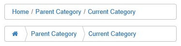
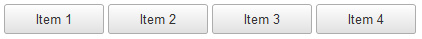
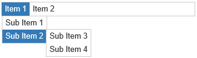
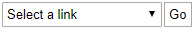
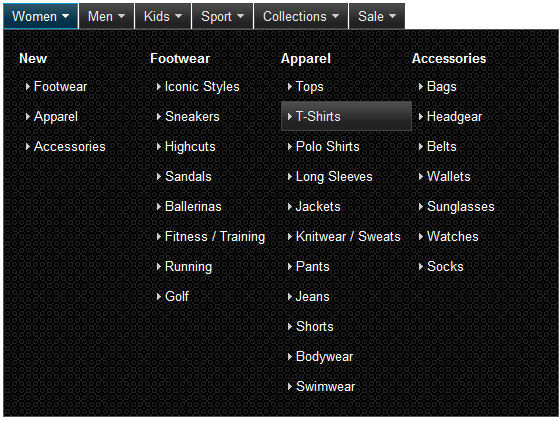
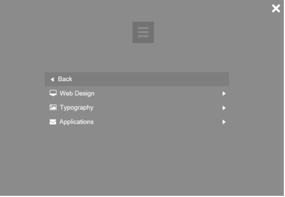
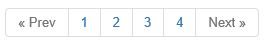
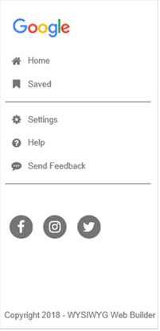
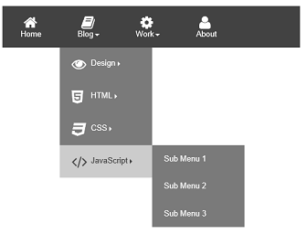
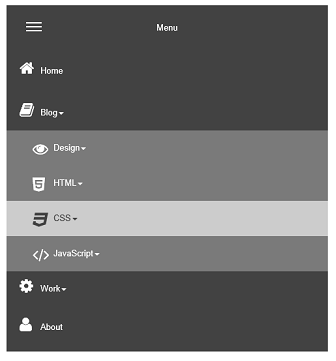
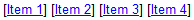
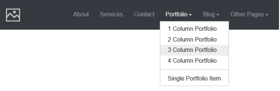
Layer Menu
A Layer Menu is an advanced menu where the drop down menus are layers. This is great for creating advanced mega menus with images, text, form or any other object!
A Layer Menu is an advanced menu where the drop down menus are layers. This is great for creating advanced mega menus with images, text, form or any other object!
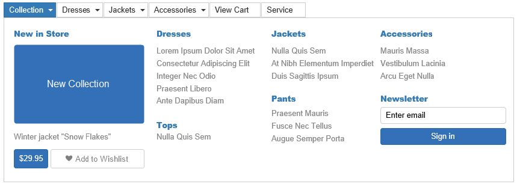